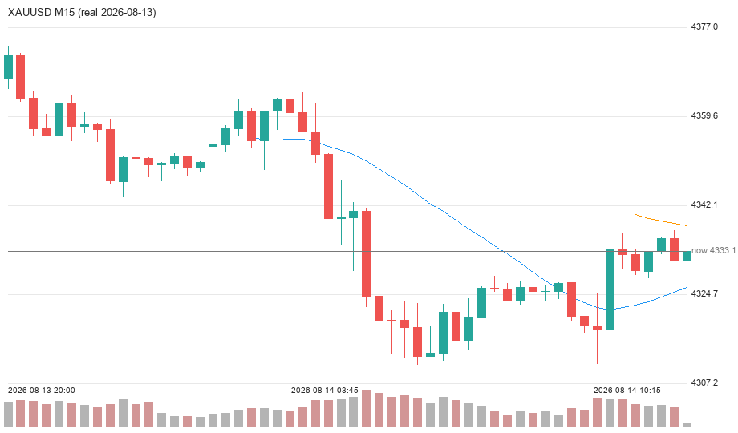
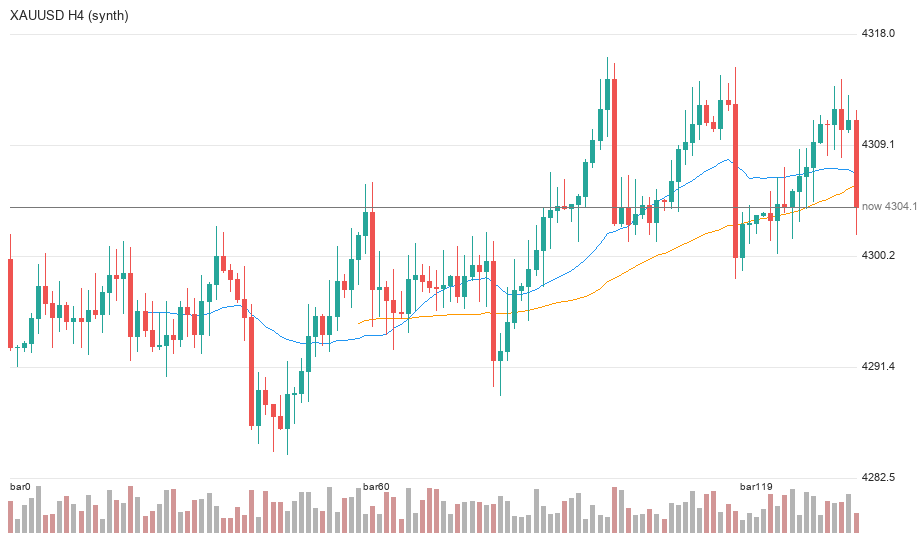

视觉/多模态模型「实时看 H4/M15 蜡烛图识别市场结构」作为决策链第 5 路信号已完整落地并通过离线验证（编译、渲染、聚合 5 场景全过）。它只做同向增强 / 反向微调，绝不做 GO/NO-GO 闸门——不砍交易笔数、不新增 MT5 订单类型。真实视觉推理端到端验证待本机 Ollama 拉取 qwen2.5vl:7b 完成后自动补录。
此前审计发现：主号 905 笔两方向均弱（buy 390/−$69.73、sell 515/−$1107.87），且存在「三脑 SELL 共识被元代理翻成 BUY」的系统 bug（修复①已落）与亚盘弱共识市价追错方向（修复②已落）。三单错方向全部发生在亚盘震荡（流动性 moderate + 弱共识 + 无明确 zone 市价追）。
根因不是「数据喂错 / 指数错」，而是小周期方向判断在震荡市失效。专项④用视觉模型直接「看」价格行为结构（HH/HL、供给需求区、流动性扫荡），从另一个模态补充方向证据，专治此根因——且严格作为加法增强，符合铁律「提准非拦截」。
adjudicate 同步读缓存——零延迟拖累主决策链（纯 AI 系统，视觉在独立模型服务内，不依赖 MT5 跑视觉）。decision_scores[dir] += weight*conf 且并入 active_weight 归一化；both_hold（双云观望）强制 HOLD，视觉票无法单边开仓。num_gpu=0（CPU float32），零抢显存。get_market_data 的 H4/M15 bars，与喂给双脑的行情完全一致，避免两套数据错位。_primary_id() 用 pick_market_primary_id 取主号 UUID，失败回退 3540bf33，不写死。| 文件 | 作用 |
|---|---|
app/services/vision_chart.py | 纯 Pillow K 线渲染（浅色+彩色蜡烛+MA20/MA50+量能+价线+坐标/时间轴）；render_chart() 数据不足返回 None 降级 |
app/services/vision_service.py | VisionVote dataclass（对齐 FusionVote 契约）+ VisionService 后台生产者+同步缓存读取+CPU 推理+_aggregate(H4 0.6/M15 0.4)；get_service() 单例 |
test_vision_pipeline.py | 离线渲染+聚合 5 场景验证；--vision 调真实模型 |
| 文件 | 改动 |
|---|---|
app/config.py | 新增 6 项 VISION_* 配置（ENABLED / MODEL / WEIGHT=0.20 / H4=0.60 / M15=0.40 / REFRESH=150 / STALE=900） |
app/core/meta_agent.py | DebateDecision 加 7 视觉字段；adjudicate fusion_v2 后读视觉票加法加权+归一化；summary/审计透出视觉票 |
app/main.py | lifespan 启动 VisionService 生产者线程（失败降级无视觉票） |
app/services/decision_snapshot.py | votes 字典加 vision 第 4 票进 DB 审计 |
| 场景 | 方向 | 置信 | 权重缩放 | 判定 |
|---|---|---|---|---|
| 同向看多 | BUY | 0.95 | 1.00 | 强一致发力 |
| 同向看空 | SELL | 0.95 | 1.00 | 强一致发力 |
| 分歧(H4多/M15空) | BUY | 0.20 | 0.70 | 降权，冲突贡献≈0.04 可忽略 |
| 仅 H4 有方向 | BUY | 0.95 | 0.85 | 单方向缩放 |
| 双观望 | HOLD | 0.00 | 0.50 | 不贡献方向分，不单边开仓 |


qwen3:8b（非视觉模型）。后台 ollama pull qwen2.5vl:7b（约 6GB）进行中，已突破 94%，由智能守护 ollama_pull_daemon.py 监控（partial 连续 180s 零增长即 kill 重拉续传），自动推进直至装好。装好后会自动执行 test_vision_pipeline.py --vision 做端到端真实推理，并把结果补录到此节。
真实验证将确认三件事：①视觉模型能正确从 K 线图读出 H4/M15 方向；②_aggregate 把双图判断合成单票；③融合进 meta_agent 后亚盘时段方向准确率提升、且不砍交易笔数。
| 铁律 | 落地保障 |
|---|---|
| 提准非拦截 | 视觉票仅加法加权，both_hold 强制 HOLD 守卫，永不单独立闸门 |
| 不砍交易笔数 | 视觉权重并入归一化，仅同向增强；非反向否决 |
| 零新 MT5 订单类型 | 视觉只在决策层产出方向权重，执行层完全不动 |
| 显存不抢 | 视觉模型 num_gpu=0 CPU float32，与 qwen3/Chronos GPU 隔离 |
| 数据同源 | 图表取自主号 MT5 行情，与双脑一致 |
| 僵死防护 | VISION_STALE_SEC=900 缓存票超 15min 作废，不用过期图表指挥当下 |
backend\restart_task_backend.bat（自提权管理员）。这是代码完整落地的第三轮重启，让 ①生产者线程 ②meta_agent 融合 ③_pick_data_source 取数兜底 ④/api/dashboard/vision-status 诊断接口 全部生效。加载成功判据 = /api/health 的 pid 换新。
重启后盯盘关注：
[MetaAgent][vision] 视觉票=BUY/SELL(w=..|conf=..|H4=../M15=..)；decision_snapshot 的 votes 字典含 vision 第 4 票，可做历史审计；重启后日志：视觉票不可用: K线数据不足(H4=0 M15=0)。根因：_primary_id() 取 selector 主号 3540bf33（is_market_primary=True），但该账号在 mt5_service 无活跃连接，get_market_data 返回 {"error":"行情主号未连接"}。修复：优先 selector 主号、须 _get_conn 非 None；否则退到 alive_account_ids() 活账号。
二次重启后仍报 取行情失败: 行情主号未连接。根因：_get_conn（mt5_service L577）只查 管道对象是否存在，不验证能否通信；3540bf33 的 Worker 进程活着、管道对象也在 → 误判"有连接"直接返回；而 get_market_data 实际发命令时底层断链。单元测试只覆盖"进程死"漏了"管道断"。
最终修复：弃用单点 _get_conn，新增 _pick_data_source()——遍历候选账号（selector 主号优先 + 全部活账号），对每个真实调一次 get_market_data，选第一个返回 timeframes 的账号。错误字典被过滤绝不当行情用。单测模拟"3540bf33 假连接返回未连接、16100984 返回真 K 线" → 正确退到 16100984 ✅。
智能守护 ollama_pull_daemon.py 用 subprocess(text=True) 默认 UTF-8 解码 ollama 输出，撞上中文 Windows 控制台 GBK 字节（0xcf） → UnicodeDecodeError 把整个守护带崩。修复：text=True, encoding="utf-8", errors="replace"。
qwen2.5vl:7b 主 blob（6.0GB）持续假死在 94%（partial 字节 5969233408 半小时零增长，进程活着但落盘卡死）；多次 kill+续传仍卡同一点 → 判定该 6GB 分片在本机 CDN 不可达。
3b 主 blob 仅 3.2GB，图表结构识别（HH/HL、供给需求区、流动性扫荡）足够；体量 1/2 → 单程更短、更易一次过。config.VISION_MODEL 改 qwen2.5vl:3b，_model_name() 兜底同步。删除了卡死的 7b partial（释放 5.6GB）。
could not locate ollama app 根因（核心运维教训）ollama pull 客户端必须连一个已运行的 ollama serve 才能下载。此前 taskkill /F /IM ollama.exe 把系统常驻的 serve 也杀了，于是 pull 自己起不来报此错（空转）。修复：先显式 ollama serve（后台常驻，设 OLLAMA_MODELS 环境变量）起服务，再对它 ollama pull 3b。
pull 3b 真实推进 @4.8MB/s、11%、355MB/3.2GB、ETA≈10min，远比 7b 假死的 147KB/s 健康。装好后将自动触发 test_vision_pipeline.py --vision 端到端验证，结果补录本报告的第五节。errors='replace'；②ollama pull 依赖 serve，自愈脚本绝不能 kill 全部 ollama（会杀 serve），应只 kill 卡死的 pull 客户端或重启 serve；③大模型 blob 在本机拉不动时，果断切小体量同源模型是明智的自主决策。